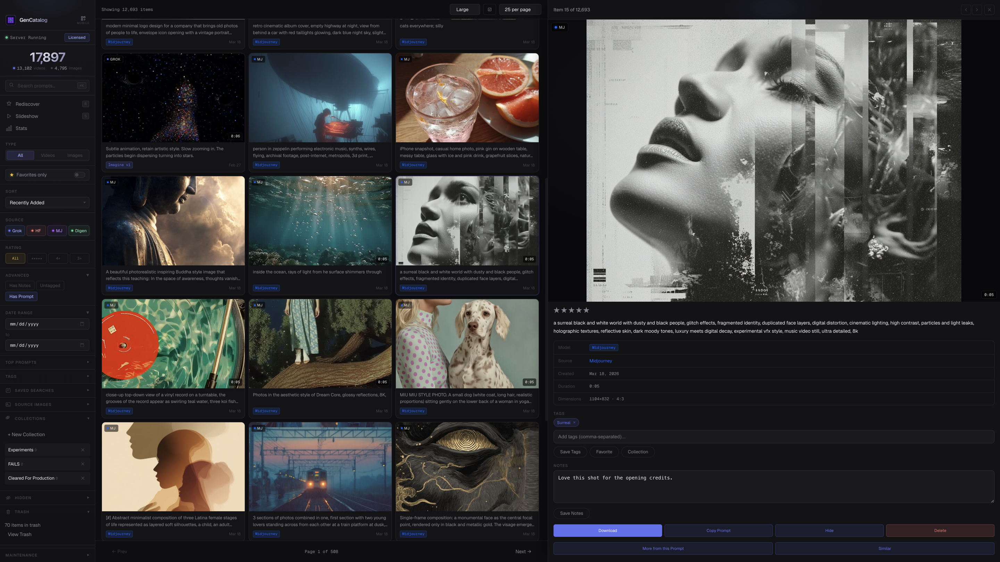

Can GenCatalog save Grok Imagine generations with prompts intact?
Yes. GenCatalog stores each saved image alongside its prompt and key context so you can search and revisit it later.
If you generate often in Grok Imagine, your Favorites can quietly grow into thousands of generations. At that scale, page loads can slow down, browsing can feel heavy, and Grok File storage can get consumed fast, even on paid tiers. On mobile, a massive backlog can make the app struggle on otherwise powerful devices. GenCatalog lets you save Grok images with full context so you can clear favorites and reclaim storage with confidence.

If you use Grok Imagine heavily, you've probably done some version of this: download images in bursts, copy prompts into Apple Notes or a spreadsheet, and swear you'll organize it later. Then you want to revisit the one that actually mattered and you can't remember where it is, what the prompt was, or which account you used.
GenCatalog turns that mess into a fast, searchable local library so your Grok creations stay connected to their prompts and context.
GenCatalog is less about files and more about being able to find the idea again.
Everything stays local on your machine.
Read the full guide: The Best Way to Download and Organize Grok Imagine Images →
Purpose-built for Grok creators
Most Grok creators do not fail because they cannot generate enough. They fail because they cannot maintain the archive after months of output. Favorites bloat, performance drops, storage fills, and mobile usage gets painful. If you rely on Grok Imagine seriously, you need a repeatable system: save instantly, preserve prompt metadata, and confidently remove clutter from Grok itself. GenCatalog gives you that system.
Use GenCatalog as your daily Grok Imagine downloader. Save individual generations as you browse, with no manual file naming and no copy-paste prompt cleanup.
When you save Grok images, context matters. GenCatalog acts like a Grok prompt saver, keeping prompt text and metadata connected so your winning ideas are reusable.
From single keeps to full archive sessions, you can run Grok bulk download favorites workflows and quickly organize what matters without losing your place.
Find old generations by prompt fragments, tags, platform, date, favorites, or notes. No more hunting through Downloads and old tabs to find one image.
Once captures are safe in GenCatalog, you can remove old Grok favorites to improve day-to-day browsing while keeping every important result in your own archive.
Offload valuable generations from platform storage into your local catalog. You keep ownership while reducing pressure on Grok File storage and mobile performance.
GenCatalog is straightforward: install once, generate as usual, and let your collection grow in a structure that is easy to search and revisit.
Install the desktop app and extension. Point GenCatalog to a storage folder. From that point on, saving from Grok Imagine is a one-click action.
→When you see something worth keeping, save it on the spot. GenCatalog functions as a Grok Imagine downloader and a Grok prompt saver at the same time.
→After importing, organize with tags and ratings, then clear old Grok favorites and storage without anxiety. You can save Grok images now and still find them months later.
You spend less time looking for files and more time creating, iterating, and shipping. That is the core difference between occasional downloading and a true creative system.
When your historical work is safely archived, you can reduce Favorites volume on-platform and keep active sessions moving faster.
Move valuable generations off platform storage into your own local catalog, then reclaim space without second-guessing what to delete.
Lean platform-side libraries are easier to browse on mobile, while GenCatalog keeps the full high-volume archive accessible on desktop.
Yes. GenCatalog stores each saved image alongside its prompt and key context so you can search and revisit it later.
Yes. GenCatalog supports bulk operations so you can pull down large favorites libraries without manually downloading one by one.
Yes. You can save from multiple accounts and keep everything tagged so your libraries don't blend together.
On your computer, in a folder you control. No cloud uploads.
Yes. GenCatalog runs on both and works with the Chrome extension.
Simple limits, clear behavior, and your data stays accessible.
No subscriptions. No recurring fees. One-time purchase. All GenCatalog v1 updates included.
★★★★★ "Worth every penny" from creators managing 12,000+ files.
Free trial: 7 days or 100 saved items, whichever comes first.
Buy GenCatalog — $39Download GenCatalog and take control of your creative library.
macOS 10.15+ · Windows 10+ · Apple Silicon, Intel & x64